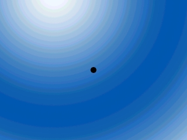
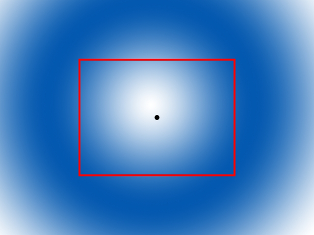
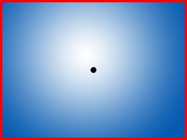

直到现在，你一直是工作在640 x 480的环境下。本节课中，我们将重新写一遍“运动”那一课教程中的程序，只是这次我们将能够在任意大小的区域里移动了，多亏了“滚动”。
当你有一个需要滚动的游戏时，（与没有滚动的游戏相比较）它们唯一的不同是带滚动的游戏必须要有一个“相机”。
因为你不能将整个关卡显示在窗口中，所以你必须选取你想看到的那一部分：
然后将它切割出来并把它显示在窗口中：
由于你必须移动相机来表明你想要做的事情，这会带来更多的工作。在这个程序里，相机会随着我们所控制的小黑点的运动而运动。
译者注:camera的翻译有很多种，有“相机”、“摄像头”、“摄像机”，我不太清楚用哪种最好，挑个最短的吧。
因为你不能将整个关卡显示在窗口中，所以你必须选取你想看到的那一部分：

然后将它切割出来并把它显示在窗口中：

由于你必须移动相机来表明你想要做的事情，这会带来更多的工作。在这个程序里，相机会随着我们所控制的小黑点的运动而运动。
//窗口属性
const int SCREEN_WIDTH = 640;
const int SCREEN_HEIGHT = 480;
const int SCREEN_BPP = 32;
//帧率
const int FRAMES_PER_SECOND = 20;
//小黑点的大小
const int DOT_WIDTH = 20;
const int DOT_HEIGHT = 20;
//关卡地图的大小
const int LEVEL_WIDTH = 1280;
const int LEVEL_HEIGHT = 960;
//表面
SDL_Surface *dot = NULL;
SDL_Surface *background = NULL;
SDL_Surface *screen = NULL;
//事件结构体
SDL_Event event;
//相机
SDL_Rect camera = { 0, 0, SCREEN_WIDTH, SCREEN_HEIGHT };
这些是我们的全局变量。
我们有标准常量、表面、事件结构体以及其他的一些好东西，只是这次我们有两个新的常量，它们分别定义了关卡地图的宽和高。因为我们可以滚动，所以我们并不把所有东西都限制在窗口中，但是现在我们要将小黑点限制在关卡地图中。
就像我先前提到的，我们需要一个相机来定义我们要显示在窗口中的那一部分区域。由于窗口是一个矩形的区域，所以相机是个SDL_Rect类型的结构体。
这里我们将相机初始化，将其位置设为地图左上角，宽高设为窗口的宽高。
我们有标准常量、表面、事件结构体以及其他的一些好东西，只是这次我们有两个新的常量，它们分别定义了关卡地图的宽和高。因为我们可以滚动，所以我们并不把所有东西都限制在窗口中，但是现在我们要将小黑点限制在关卡地图中。
就像我先前提到的，我们需要一个相机来定义我们要显示在窗口中的那一部分区域。由于窗口是一个矩形的区域，所以相机是个SDL_Rect类型的结构体。
这里我们将相机初始化，将其位置设为地图左上角，宽高设为窗口的宽高。
//小黑点
class Dot
{
private:
//点的坐标
int x, y;
//点的速度
int xVel, yVel;
public:
//初始化变量
Dot();
//处理按键事件并调节点的速度
void handle_input();
//移动小黑点
void move();
//将点显示在窗口中
void show();
//根据点的位置设定相机
void set_camera();
};
这里是我们的dot类的定义。
这个和前面课程里的几乎一模一样，但这次我们有一个根据点的位置将相机居中的函数。
这个和前面课程里的几乎一模一样，但这次我们有一个根据点的位置将相机居中的函数。
void Dot::move()
{
//向左或向右移动小黑点
x += xVel;
//如果小黑点移动到左右边界外
if( ( x < 0 ) || ( x + DOT_WIDTH > LEVEL_WIDTH ) )
{
//撤销移动
x -= xVel;
}
//向上或向下移动小黑点
y += yVel;
//如果小黑点移动到上下边界外
if( ( y < 0 ) || ( y + DOT_HEIGHT > LEVEL_HEIGHT ) )
{
//撤销移动
y -= yVel;
}
}
这个函数与前面的很类似，但这里有一个关键的不同点：我们不再将点约束在窗口内了，现在我们是将点约束在整个关卡地图里。
void Dot::set_camera()
{
//根据点的位置将相机居中
camera.x = ( x + DOT_WIDTH / 2 ) - SCREEN_WIDTH / 2;
camera.y = ( y + DOT_HEIGHT / 2 ) - SCREEN_HEIGHT / 2;
//将相机约束在地图边界内
if( camera.x < 0 )
{
camera.x = 0;
}
if( camera.y < 0 )
{
camera.y = 0;
}
if( camera.x > LEVEL_WIDTH - camera.w )
{
camera.x = LEVEL_WIDTH - camera.w;
}
if( camera.y > LEVEL_HEIGHT - camera.h )
{
camera.y = LEVEL_HEIGHT - camera.h;
}
}
当我们设置相机时，我们先依据点的位置将相机居中。
因为我们不想让任何关卡外的东西显示在窗口中，所以我们还必须在相机居中后将它约束在关卡边界内。
于是我们要检测相机是否在地图边界内，如果发现它有一部分超出了边界，我们就将它移回边界内。
因为我们不想让任何关卡外的东西显示在窗口中，所以我们还必须在相机居中后将它约束在关卡边界内。
于是我们要检测相机是否在地图边界内，如果发现它有一部分超出了边界，我们就将它移回边界内。
void Dot::show()
{
//显示小黑点
apply_surface( x - camera.x, y - camera.y, dot, screen );
}
这个函数以相对于相机的坐标将小黑点blit到窗口中，这样可以保证它能与背景匹配。
//当用户还没有请求退出时
while( quit == false )
{
//启动帧计时器
fps.start();
//当有事件需要处理
while( SDL_PollEvent( &event ) )
{
//为小黑点处理事件
myDot.handle_input();
//如果用户单击了窗口右上角的关闭按钮
if( event.type == SDL_QUIT )
{
//退出程序
quit = true;
}
}
//移动小黑点
myDot.move();
//设置相机
myDot.set_camera();
//显示背景
apply_surface( 0, 0, background, screen, &camera );
//显示小黑点
myDot.show();
//更新屏幕
if( SDL_Flip( screen ) == -1 )
{
return 1;
}
//捕获帧率
if( fps.get_ticks() < 1000 / FRAMES_PER_SECOND )
{
SDL_Delay( ( 1000 / FRAMES_PER_SECOND ) - fps.get_ticks() );
}
}
现在这个是程序的主循环。
我们处理事件、移动小黑点、设置相机、将背景中位于相机内的区域应用到窗口中、显示小黑点、更新窗口，最后捕获帧率。
我们处理事件、移动小黑点、设置相机、将背景中位于相机内的区域应用到窗口中、显示小黑点、更新窗口，最后捕获帧率。